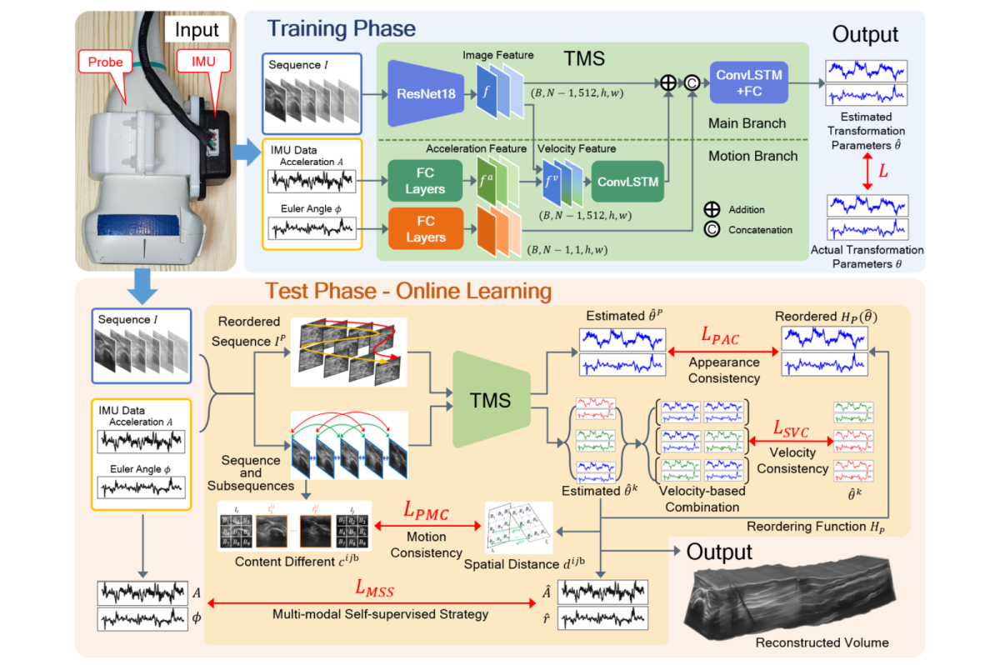
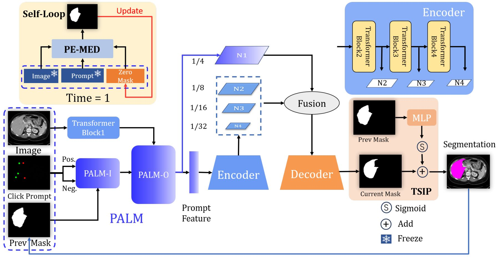
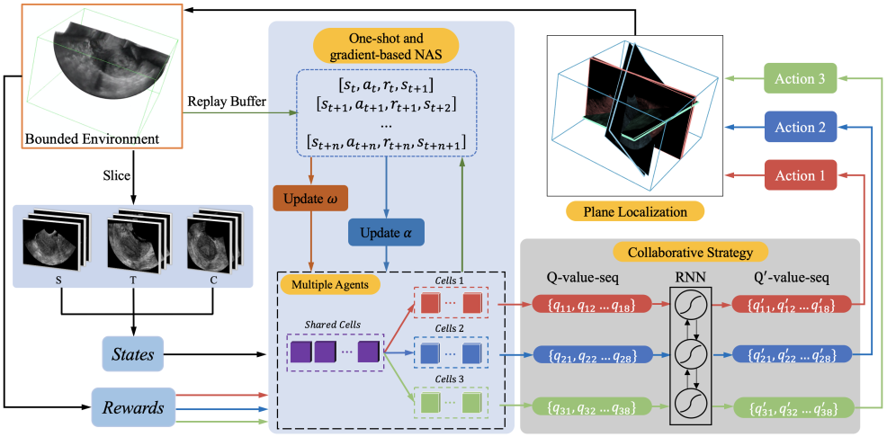
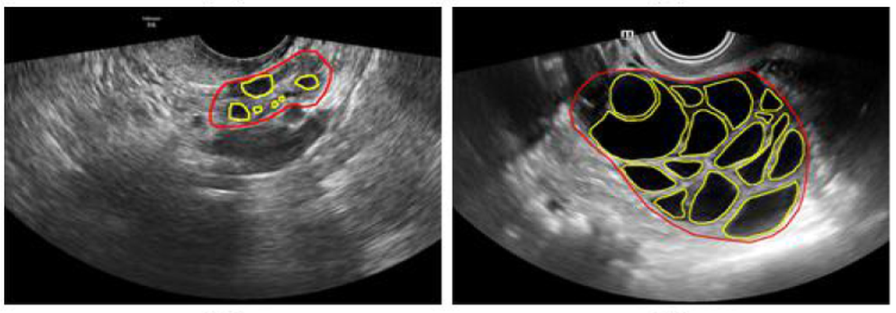
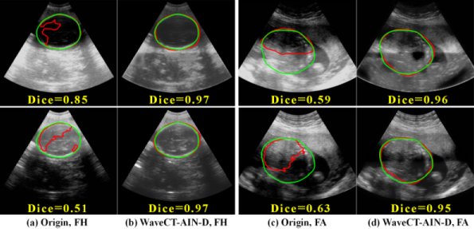
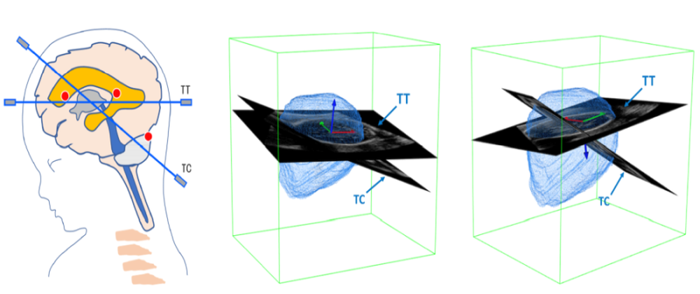

Xin Yang [楊鑫]Associate Professor
Rm A2-504 |
|


Biography [CV]
I am currently an Associate Professor of Biomedical Engineering Department, Health Science Center, Shenzhen University. I got my Ph.D. from the Department of Computer Science and Engineering, The Chinese University of Hong Kong, supervised by Prof. Pheng-Ann Heng. Before that, I finished my master in School of Biomedical Engineering, Health Science Center, Shenzhen University, supervised by Prof. Dong Ni. I finished my undergraduate with top rank and National Scholarship in the Department of Biomedical Engineering, South-Central University for Nationalities. During my master period, I was offered the chance to visit the IDEA Lab, UNC-Chapel Hill, and supervised by Prof. Dinggang Shen. During my PhD period, I got the ORAP Scholarship and got a visiting chance in Cardiac Magnetic Resonance Center, Harvard Medical School.
I am also running a startup RayShape, which has been focusing on the cutting-edge AI technics for accessible and visionary ultrasound products with the mission to advance global healthcare.
My research interest includes medical image computing, intelligent ultrasound, cardiac image analysis and computer graphics.
I am looking for self-motivated, qualified students to work with. Internship, bachelor, master and Ph.D. students are welcome to contact with detailed resume.
News
- [06/2025] Eight papers were accepted by MICCAI 2025.
- [05/2025] Congratulations to Mingyuan Luo for his paper about the Freehand Ultrasound Reconstruction was accepted by IEEE Transactions on Neural Networks and Learning Systems.
- [05/2025] Congratulations to Jian Wang for his paper about the Intelligent Breast Ultrasound Report Generation was accepted by Radiology: Artificial Intelligence.
- [04/2025] Congratulations to Yuanji Zhang for her paper about the Quality Assessment of Nuchal Translucency was accepted by Radiology: Artificial Intelligence.
- [03/2025] Congratulations to Yuhao Huang for his paper about the Reinforcement Learning based Flip Learning was accepted by Medical Image Analysis.
- [03/2025] Congratulations to Binghan Li for her paper about the Deep Learning based First-Trimester Fetal Ultrasound Image Quality Auditing was accepted by BMC Pregnancy and Childbirth.
- [02/2025] Congratulations to Liwei Du for his paper about the Deep Learning based Quality Control on Cardiac Ultrasound Video was accepted by Medical Physics.
- [01/2025] Congratulations to Haoran Dou for his paper about the Diffusion Model based 3D Plane Localization was accepted by Computer Methods and Programs in Biomedicine.
- [12/2024] Congratulations to Zhiyuan Zhu for his paper about the AI for Fetal Cleft Lip & Palate Diagnosis was accepted by BMC Pregnancy and Childbirth.
- [12/2024] Congratulations to Xing Tao for his paper about the Lesion Detection in ABUS was accepted by Medical Image Analysis (Q1, IF 10.7).
- [12/2024] Congratulations to Chaoyu Chen for his paper about the Fetal Ultrasound Image Quality Assessment was accepted by Biomedical Signal Processing & Control (Q1, IF 4.9).
- [12/2024] Congratulations to Ao Chang for his paper about the 3D Interactive Medical Imaging Segmentation was accepted by Neural Networks (Q1, IF 6.0).
- [10/2024] Congratulations to our team led by Zhongnuo Yan, Mingyuan Luo and Jiongquan Chen in winning the Trackerless 3D Freehand Ultrasound Reconstruction (TUS-REC) Challenge in MICCAI 2024 (Leaderboard)!
- [07/2024] Congratulations to Dr. Jin Wang for her paper about the AI-based motion analysis of pelvic floor was accepted by American Journal of Obstetrics & Gynecology (Q1, IF 8.7).
- [07/2024] Congratulations to Dr. Jun Ma for his paper about the abdominal organ segmentation Challenge in CT was accepted by The Lancet Digital Health (IF 23.8).
- [06/2024] Congratulations to Zhongnuo Yan for his paper about the MAMBA-based freehand ultrasound reconstruction was accepted by MICCAI 2024, in Morocco.
- [06/2024] Congratulations to Junxuan Yu and Jiezhi Yao for their paper about fetal intracranial marker measurement was accepted by International Journal of Gynecology and Obstetrics!
- [05/2024] Congratulations to Xiaoqiong Huang for her paper about fetal arrhythmia diagnosis was accepted by Medical Image Analysis (Q1)!
- [05/2024] Congratulations to Jiezhi Yao (Bachelor) for his paper about levator hiatus anaylsis was accepted by Ultrasound in Medicine and Biology!
- [04/2024] Congratulations to Zhongnuo Yan for his foundation Video Object Segmentation paper getting the Oral presentation in ISBI 2024, Athens, Greece!
- [02/2024] Congratulations to Yuanji Zhang for her paper about the intelligent fetal ultrasound measurement was accepted by BMC Pregnancy and Childbirth (Q2).
- [02/2024] Congratulations to Jian Wang for his paper about the thyroid ultrasound diagnosis was accepted by Computers in Biology and Medicine (Q1).
- [02/2024] Congratulations to Dr. Jun Ma for his paper about the general multi-modality cell segmentation was accepted by Nature Methods (IF 51.3).
- [02/2024] Congratulations to Zhongnuo Yan for his paper about the foundation model for general moving object segmentation in medical images was accepted by ISBI 2024 (Athens, Greece).
- [01/2024] Congratulations to Lian Liu for her paper about fetal heart rhythm assessment was accepted by Heart Rhythm (Q1).
- [12/2023] Congratulations to Yuhao Huang for his paper about SAM for Medical Image Segmentation was accepted by Medical Image Analysis (Q1).
- [10/2023] Congratulations to Chaoyu Chen for his paper about 3D fetal pose estimation in ultrasound was accepted by Medical Image Analysis (Q1).
- [09/2023] Congratulations to Kai Liu for his paper about fetal facial profile marker measurement in first-trimester ultrasound was accepted by BMC Pregnancy and Childbirth.
- [06/2023] Five papers were accepted by MICCAI 2023 (four early accepted)
- [05/2023] Congratulations to Hongzhang Wang for his paper about standard plane detection in first-trimester ultrasound videos was accepted by UMB.
- [04/2023] Congratulations to Mingyuan Luo for his paper about Sensorless 3D Freehand ultrasound reconstruction was accepted by Medical Image Analysis (MedIA)(Q1).
- [03/2023] Congratulations to Xiaoqiong Huag for her paper about Robust Medical Image Segmentation was accepted by Computer Methods and Programs in Biomedicine (CMPB)(Q1).
- [02/2023] Congratulations to Sijing Liu for her paper about Quality Assessment of Fetal Ultrasound Video was accepted by ISBI 2023.
- [12/2022] Congratulations to Xinrui Zhou for his paper about Carotid Ultrasound Diagnosis was accepted by European Radiology.
- [11/2022] I was invited as a Reviewer for CVPR 2023.
- [10/2022] Congratulations to Jikuan Qian for his paper about Intelligent Ultrasound Diagnosis on Infant Developmental Dysplasia of the Hip was accepted by Journal of Ultrasound in Medicine!
- [10/2022] Rank among the World's Top 2% of Scientists list!
- [08/2022] Congratulations to Mingyuan Luo for the MICCAI 2022 Oral Presentation (only 2.3% acceptance ratio). Third MICCAI Oral from MUSIC Lab!
- [06/2022] Congratulations to Mingyuan Luo for the MICCAI 2022 Student Travel Award (only 3.7% acceptance ratio).
- [06/2022] Five papers were accepted by MICCAI 2022 (three early accepted).
- [06/2022] Paper of Mingrong Lin about breast lesion segmentation in ultrasound images was accepted by Medical Image Analysis (Q1).
- [05/2022] Paper of Van Manh about interpretable diagnosis of thyroid nodules in ultrasound was accepted by IEEE TUFFC (Q1).
- [04/2022] Paper of Jiamin Liang about high resolution and realistic ultrasound image synthesis/edition was accepted by Medical Image Analysis (Q1).
- [04/2022] Paper of Jikuan Qian and Rui Li about hybrid neural architecture search (NAS) was accepted by Expert Systems With Applications (Q1).
- [03/2022] I was invited by MindSpore Team, AI framework of Huawei Inc., to share our research and software development based on MindSpore in their 2-year opensource birthday TechDay.
- [03/2022] Ziqi's paper about style transfer based domain adaptation was accepted by CVPR 2022.
- [01/2022] Wang Haixia's paper about hepatic echinococcosis ultrasound diagnosis was accepted by Medical Physics (Q1).
- [01/2022] Wang Kaini's paper about auto-weighted supervision for cardiac MR segmentation was accepted by Medical Image Analysis (Q1).
- [12/2021] I was recommended and invited by Tengman Forum, an inner technical platform of Huawei Inc. and shared our research on intelligent ultrasound and Pair software.
- [11/2021] Dr. Xiaowei Xu from Guangdong Provincial People's Hospital shared his work on AI for congenital heart disease with an invited talk.
- [11/2021] I was recommended as an Associate Editor for the journal Frontiers in Radiology in section: Artificial Intelligence in Radiology.
- [10/2021] Miao Juzheng's paper about meta-learning for landmark detection was selected as Featured Article by IEEE JBHI.
- [10/2021] Dr. Jun Ma from Nanjing University of Science and Technology (NUST) shared his thoughts on medical image segmentation with an invited talk.
- [09/2021] Mr. Zhipeng Huang from Huawei introduced the MindSpore and community with an invited talk.
- [08/2021] Three students from our MUSIC Lab shared their MICCAI 2021 papers on a live broadcast on Bilibili.
- [08/2021] I was invited as a Program Committee Member for AAAI 2022.
- [07/2021] I was invited as Review Editor in Frontiers in Radiology-Artificial Intelligence in Radiology.
- [07/2021] I was invited by Prof. Xiaoying Tang to share our recent work in the College of Engineering, Southern University of Science and Technology.
- [06/2021] Our MICCAI extension paper about NAS based multi-modality breast ultrasound fusion was accepted by Medical Image Analysis.
- [06/2021] Three papers were accepted by MICCAI 2021 (one early accepted).
- [06/2021] Our paper on ultrasound diagnosis of infant developmental dysplasia of the hip (DDH) was accepted by IEEE JBHI. Congratulations to Xindi HU!
- [06/2021] Our paper about Multi-Centre/Vendor/Disease Cardiac Segmentation Challenge was accepted by IEEE TMI.
- [05/2021] I was invited as the PC Member and Reviewer for the Workshop on Machine Learning in Medical Imaging (MLMI), MICCAI 2021.
- [05/2021] Our MICCAI extension paper about neural architecture search in RL was accepted by Medical Image Analysis.
- [05/2021] Our paper on meta-learning for landmark detection was accepted by IEEE JBHI.
- [05/2021] Our MICCAI extension paper on 3D ovarian ultrasound segmentation was accepted by Medical Image Analysis.
- [04/2021] Invited as a Program Committee for ICCV 2021 Workshop on Computer Vision for Automated Medical Diagnosis.
- [03/2021] Our MICCAI extension paper on Reinforcement Learning based 3D plane detection was accepted by IEEE TMI.
- [02/2021] I was awarded the Distinguished Reviewer Certificate (Bronze Level) by IEEE TMI. Thanks!
- [01/2021] Our paper about fast style transfer based robust ultrasound image segmentation was accepted as Oral by IEEE ISBI.
- [12/2020] Our paper about lung ultrasound based COVID-19 assessment was accepted by Medical Image Analysis.
- [11/2020] Our paper about cortical plate segmentation in fetal MRI was accepted by IEEE TMI.
- [09/2020] Our paper about left atrial segmentation Challenge was accepted by Medical Image Analysis.
- [08/2020] Our paper about fundus image segmentation on unseen domains was accepted by IEEE TMI.
- [07/2020] I was offered the opportunity to give a presentation about DNN robustness on MICS-2020, Dalian, China [Video].
- [06/2020] Our paper about follicle monitoring in clinical ultrasound study has been accepted by UMB.
- [06/2020] Four papers were accepted by MICCAI 2020 (three early accepted).
- [05/2020] Our paper about uncertainty-based cross-domain medical image segmentation was accepted by Medical Image Analysis.
- [02/2020] Our paper about fetal head segmentation in 3D ultrasound was accepted by Computer Methods and Programs in Biomedicine.
- [01/2020] Three papers about ultrasound image segmentation, synthesis and detection were accepted by ISBI 2020.
- [10/2019] Our paper about 2D ovary and follicle ultrasound image segmentation was accepted by IEEE JBHI.
- [08/2019] Our conference extension paper about 3D breast ultrasound (ABUS) analysis was accepted by IEEE TMI.
- [07/2019] Our MMWHS 2017 Challenge paper was accepted by Medical Image Analysis.
- [07/2019] Three papers were accepted by MICCAI 2019 (two early accepted with one oral (3%)).
- [06/2019] Finish my Ph.D. defense on 11-June-2019. Thanks.
- [04/2019] Our work about attentative learning for prostate segmentation in 3D ultrasound was accepted by IEEE TMI.
- [03/2019] Our work about fetal femur segmentation and landmark detection in 3D ultrasound was accepted by the conference IEEE BHI 2019.
- [02/2019] Our work about optic disc and cup segmentation in fundus images was accepted by IEEE TMI.
- [09/2018] Our teams from CUHK, Tencent YouTu and Shenzhen Univ. won the second and third prizes out of 27 competitors in 2018 Atrial Segmentation Challenge.
- [08/2018] Start my internship in Cardiovascular MR Center, Harvard BIDMC, supervised by Prof. Reza Nezafat.
- [07/2018] Our conference extension paper about 3D prenatal ultrasound segmentation was accepted by IEEE TMI.
- [05/2018] Three papers were early accepted by MICCAI 2018.
- [04/2018] The ACDC Challenge paper was accepted by IEEE TMI. Automated Cardiac Diagnosis Challenge (ACDC).
- [03/2018] I was offered with the scholarship Overseas Research Attachment Programme for PhD Students (ORAP) from the Engineering Department, CUHK.
- [07/2017] Our team won the second place in CT image segmentation section in MM-WHS 2017: Multi-Modality Whole Heart Segmentation Challenge.
- [05/2017] Two papers (One oral) were accepted to MICCAI 2017.
- [12/2016] We are keeping the first record on the MICCAI Grand Challenge: Prostate MR Image Segmentation 2012.
- [10/2016] Our team won the Whole-Heart and Great Vessel Segmentation Challenge.
Selected Publications | Google Scholar
| /*2025*/ | |
|
An Orchestration Learning Framework for Ultrasound Imaging: Prompt-guided Hyper-perception and Attention-matching Downstream Synchronization Zehui Lin, Shuo Li, Shanshan Wang, Zhifan Gao, Yue Sun, Chan-Tong Lam, Xindi Hu, Xin Yang, Dong Ni, Tao Tan# Medical Image Analysis, X1-Top, 2025. [paper] |
|
|  |
MoNetV2: Enhanced Motion Network for Freehand 3D Ultrasound Reconstruction Luo Mingyuan, Yang Xin, Yan Zhongnuo, Cao Yan, Zhang Yuanji, Hu Xindi, Wang Jin, Ding HaoXuan, Han Wei#, Sun Litao#, Ni Dong# IEEE Transactions on Neural Networks and Learning Systems (TNNLS), X1-Top, 2025. [paper] |
|
Artificial Intelligence in Breast Ultrasound Diagnosis and Report Generation: A Retrospective, Multicenter Study Jian Wang*, Hongtian Tian*, Xin Yang, Huaiyu Wu, Xiliang Zhu, Rusi Chen, Ao Chang, Yanlin Chen, Haoran Dou, Ruobing Huang, Jun Cheng, Yongsong Zhou, Rui Gao, Keen Yang, Guoqiu Li, Dong Ni, Fajin Dong#, Jinfeng Xu#, Ning Gu#. Radiology: Artificial Intelligence, X1-Top, 2025. [paper] |
|
|
Artificial Intelligence Model for Real-Time Prenatal Nuchal Translucency Assessment: High Performance and Workflow Integration Yuanji Zhang, Xin Yang, Chunya Ji, Xindi Hu, Yan Cao, Chaoyu Chen, He Sui, Binghan Li, Chaojiong Zhen, Weijun Huang, Xuedong Deng, Linliang Yin, Dong Ni#. Radiology: Artificial Intelligence, X1-Top, 2025. [paper] |
|
|
Effectiveness and Clinical Impact of Using Deep Learning for First-Trimester Fetal Ultrasound Image Quality Auditing Xiaoyan Cao*, Binghan Li*, Yongsong Zhou, Yan Cao, Xin Yang, Xindi Hu, Chaoyu Chen, Shaokao Zhu, Hengli Lin, Tao Wang, Yuling Yan, Tao Tan, Lin Wang#, Dong Ni#. BMC Pregnancy and Childbirth, 2025. [paper] |
|
|
Flip Learning: Weakly Supervised Erase to Segment Nodules in Breast Ultrasound Yuhao Huang, Ao Chang, Haoran Dou, Xing Tao, Xinrui Zhou, Yan Cao, Ruobing Huang, Alejandro F. Frangi, Lingyun Bao#, Xin Yang#, Dong Ni#. Medical Image Analysis, X1-Top, 2025. [paper] |
|

|
FetalFlex: Anatomy-Guided Diffusion Model for Flexible Control on Fetal Ultrasound Image Synthesis Yaofei Duan*, Tao Tan*, Zhiyuan Zhu, Yuhao Huang, Yuanji Zhang, Rui Gao, Patrick Cheong-Iao Pang, Xinru Gao, Guowei Tao, Xiang Cong, Zhou Li, Lianying Liang, Guangzhi He, Linliang Yin, Xuedong Deng#, Xin Yang#, Dong Ni#. arXiv, 2025. [paper] |
|
Deep Larning Framework for Interpretable Quality Control of Echocardiography Video Liwei Du*, Wufeng Xue*, Zhanru Qi*, Zhongqing Shi, Guanjun Guo, Xin Yang, Dong Ni#, Jing Yao#. Medical Physics, 2025. [paper] |
|
|
Standard Plane Localization using Denoising Diffusion Model with Multi-scale Guidance Haoran Dou*, Yuhao Huang*, Yunzhi Huang, Xin Yang, Chaojiong Zhen, Yuanji Zhang, Yi Xiong, Weijun Huang#, Dong Ni#. Computer Methods and Programs in Biomedicine, X2, 2025. [paper] |
|
|
Deep Learning-Assisted Two-Dimensional Transperineal Ultrasound for Analyzing Bladder Neck Motion in Women With Stress Urinary Incontinence Jin Wang*, Xin Yang*, Yanqing Peng, Yan Zou, Xiduo Lu, Shuangxi Chen, Xiaoyi Pan, Dong Ni, Litao Sun. American Journal of Obstetrics & Gynecology, X1-Top, 2025. [paper] |
|
| /*2024*/ | |
|
CLP-Net: An Advanced Artificial Intelligence Technique for Localizing Standard Planes of Cleft Lip and Palate by Three-dimensional Ultrasound in the First Trimester Guangzhi He*, Zhou Li*, Zhiyuan Zhu*, Tong Han, Yan Cao, Chaoyu Chen, Yuhao Huang, Haoran Dou, Jin Peng, Lianying Liang, Fangmei Zhang, Tao Tan, Hongmei Liu#, Xin Yang#, Dong Ni#. BMC Pregnancy and Childbirth, X2, 2024. [paper] |
|
|
Efficient MedSAMs: Segment Anything in Medical Images on Laptop Jun Ma, Feifei Li, Sumin Kim, Reza Asakereh, ..., Dong Ni, Xin Yang, Guangquan Zhou, Kaini Wang, ..., Yuyin Zhou, Bo Wang. arXiv, 2024. [paper] |
|
|
Enhancing Lesion Detection in Automated Breast Ultrasound using Unsupervised Multi-view Contrastive Learning with 3D DETR Xing Tao, Ruobing Huang, Yan Cao, Yanhui Jiang, Xiaoxi Wu, Dan Yan, Wen Xue, Shulian Zhuang, Xin Yang, Jianxing Zhang, Dong Ni#. Medical Image Analysis, X1-Top, 2024. [paper] |
|
|
Enhancing Fetal Ultrasound Image Quality Assessment with Multi-Scale Fusion and Clustering-Based Optimization Chaoyu Chen, Yuhao Huang, Xin Yang, Xindi Hu, Yuanji Zhang, Tao Tan, Wufeng Xue#, and Dong Ni#. Biomedical Signal Processing & Control, 2024. [paper] |
|
|
P2ED: A Four-quadrant Framework for Progressive Prompt Enhancement in 3D Interactive Medical Imaging Segmentation Ao Chang, Xing Tao, Yuhao Huang, Xin Yang, Jiajun Zeng, Xinrui Zhou, Ruobing Huang#, Dong Ni#. Neural Networks, 2024. [paper] |
|

|
Mitral Regurgitation Recogniton based on Unsupervised Out-of-Distribution Detection with Residual Diffusion Amplification Zhe Liu, Xiliang Zhu, Tong Han, Yuhao Huang, Jian Wang, Lian Liu, Fang Wang, Dong Ni, Zhongshan Gou, Xin Yang#. MICCAI Workshop on MLMI 2024, 2024. [paper] |
|
Robust Box Prompt based SAM for Medical Image Segmentation Yuhao Huang, Xin Yang, Han Zhou, Yan Cao, Haoran Dou, Fajin Dong, Dong Ni. MICCAI Workshop on MLMI 2024, 2024. [paper] |
|
|
Explainable and Controllable Motion Curve Guided Cardiac Ultrasound Video Generation Junxuan Yu, Rusi Chen, Yongsong Zhou, Yanlin Chen, Yaofei Duan, Yuhao Huang, Han Zhou, Tan Tao, Xin Yang#, Dong Ni#. MICCAI Workshop on MLMI 2024, 2024. [paper] |
|

|
Fine-grained Context and Multi-modal Alignment for Freehand 3D Ultrasound Reconstruction Zhongnuo Yan*, Xin Yang*, Mingyuan Luo, Jiongquan Chen, Rusi Chen, Lian Liu, Dong Ni#. MICCAI, 2024. [paper] |
|
Unleashing the Strengths of Unlabeled Data in Pan-cancer Abdominal Organ Quantification: the FLARE22 Challenge Jun Ma, Yao Zhang, Song Gu, Cheng Ge, Shihao Ma, Adamo Young, Cheng Zhu, Kangkang Meng, Xin Yang, ..., and Bo Wang#. The Lancet Digital Health, 2024. [paper] |
|
|
A Novel Artificial Intelligence Model for Measuring Fetal Intracranial Markers during the First Trimester based on Two-dimensional Ultrasound Image Lingling Sun*, Junxuan Yu*, Jiezhi Yao*, Yan Cao, Naimin Sun, Keqi Chen, Yujia Lin, Chunya Ji, Jun Zhang, Chen Ling, Zhong Yang, Qi Pan, Ronghao Yang, Xin Yang, Dong Ni, Linliang Yin, Xuedong Deng. International Journal of Gynecology and Obstetrics, 2024. [paper] |
|
|
Hierarchical Online Contrastive Anomaly Detection for Fetal Arrhythmia Diagnosis in Ultrasound Xin Yang, Lian Liu, Zhongnuo Yan, Junxuan Yu, Xindi Hu, Xuejuan Yu, Caixia Dong, Ju Chen, Hongmei Liu, Zhuan Yu, Xuedong Deng, Dong Ni, Xiaoqiong Huang#, Zhongshan Gou#. Medical Image Analysis, X1-Top, 2024. [paper] |
|
|
Fully Automated Localization and Measurement of Levator Hiatus Dimensions Using 3-D Pelvic Floor Ultrasound Zhijie Guo*, Xiduo Lu*, Jiezhi Yao, Yongsong Zhou, Chaoyu Chen, Jiongquan Chen, Danling Yang, Yan Cao, Wei Zheng, Xin Yang, Dong Ni#. Ultrasound in Medicine and Biology, 2024. [paper] |
|
|
Artificial Intelligence Assistance for Fetal Development: Evaluation of an Automated Software for Biometry Measurements in the Mid-trimester Xuesong Han*, Junxuan Yu*, Xin Yang*, Chaoyu Chen, Han Zhou, Chuangxin Qiu, Yan Cao, Tianjing Zhang, Meiran Peng, Guiyao Zhu, Dong Ni, Yuanji Zhang# and Nana Liu#. BMC Pregnancy and Childbirth, X2, 2024. [paper] |
|
|
Thyroid Ultrasound Diagnosis Improvement via Multi-view Self-supervised Learning and Two-stage Pre-training Jian Wang, Xin Yang, Xiaohong Jia, Wufeng Xue, Rusi Chen, Yanlin Chen, Xiliang Zhu, Lian Liu, Yan Cao, Jianqiao Zhou#, Dong Ni#, Ning Gu#. Computers in Biology and Medicine, 2024. [paper] |
|

|
The Multi-modality Cell Segmentation Challenge: Towards Universal Solutions Jun Ma, Ronald Xie, Shamini Ayyadhury, ...,Xin Yang, Marco Labagnara, ..., and Bo Wang#. Nature Methods, 2024. [paper] |
|
A Foundation Model for General Moving Object Segmentation in Medical Images Zhongnuo Yan*, Tong Han*, Yuhao Huang, Lian Liu, Han Zhou, Jiongquan Chen, Wenlong Shi, Yan Cao, Xin Yang#, Dong Ni#. |
|
|
An Intelligent Quantification System for Fetal Heart Rhythm Assessment: A Multi-Center Prospective Study Xin Yang, Xiaoqiong Huang, Chenchen Wei, Junxuan Yu,..., Zhe Liu, Jin Peng, Dong Ni, Xuedong Deng, Lian Liu#, Zhongshan Gou# Heart Rhythm, X2-Top, 2024. [paper] |
|
|
Segment Anything Model for Medical Images? Yuhao Huang*, Xin Yang*, Lian Liu, Han Zhou, Ao Chang, Xinrui Zhou, Rusi Chen, Junxuan Yu, Jiongquan Chen, Chaoyu Chen, Haozhe Chi, Xindi Hu, Deng-Ping Fan, Fajin Dong#, Dong Ni# Medical Image Analysis, X1-Top, 2024. [paper] |
|
|
FetusMapV2: Enhanced Fetal Pose Estimation in 3D Ultrasound Chaoyu Chen*, Xin Yang*, Yuhao Huang, Wenlong Shi, Yan Cao, Mingyuan Luo, Xindi Hu, Lei Zhu, Lequan Yu, Kejuan Yue, Yuanji Zhang, Yi Xiong, Dong Ni#, Weijun Huang#. Medical Image Analysis, X1-Top, 2024. [paper] |
|
| /*2023*/ | |

|
A Novel Artificial Intelligence Model for Fetal Facial Profile Marker Measurement during the First Trimester Chunya Ji*, Kai Liu*, Xin Yang, Yan Cao, Xiaoju Cao, Qi Pan, Zhong Yang, Lingling Sun, Linliang Yin#, Xuedong Deng, Dong Ni. BMC Pregnancy and Childbirth, X2, 2023. [paper] |
|  |
PE-MED: Prompt Enhancement for Interactive Medical Image Segmentation Ao Chang*, Xing Tao*, Xin Yang, Yuhao Huang, Xinrui Zhou, Jiajun Zeng, Ruobing Huang, Dong Ni# MICCAI Workshop on MLMI, 2023. [paper] |
|
FFPN: Fourier Feature Pyramid Network for Ultrasound Image Segmentation Chaoyu Chen*, Xin Yang*, Rusi Chen, Junxuan Yu, Liwei Du, Jian Wang, Xindi Hu, Yan Cao, Yingying Liu, Dong Ni# MICCAI Workshop on MLMI, 2023. [paper] |
|
|
OnUVS: Online Feature Decoupling Framework for High-Fidelity Ultrasound Video Synthesis Han Zhou*, Dong Ni*, Ao Chang, Xinrui Zhou, Rusi Chen, Yanlin Chen, Lian Liu, Jiamin Liang, Yuhao Huang, Tong Han, Zhe Liu, Deng-Ping Fan, Xin Yang# arXiv, 2023. [paper] |
|
|
GSMorph: Gradient Surgery for cine-MRI Cardiac Deformable Registration Haoran Dou*, Ning Bi*, Luyi Han, Yuhao Huang, Ritse Mann, Xin Yang, Dong Ni, Nishant Ravikumar, Alejandro F. Frangi, Yunzhi Huang# MICCAI, 2023. [paper] |
|
|
Multi-IMU with Online Self-Consistency for Freehand 3D Ultrasound Reconstruction Mingyuan Luo*, Xin Yang*, Zhongnuo Yan, Junyu Li, Yuanji Zhang, Jun Cheng and Dong Ni# MICCAI, 2023. [paper] |
|
|
Instructive Feature Enhancement for Dichotomous Medical Image Segmentation Lian Liu*, Han Zhou*, Jiongquan Chen, Sijing Liu, Wenlong Shi, Dong Ni, Deng-Ping Fan#, and Xin Yang# MICCAI, 2023. [paper] |
|
|
Fourier Test-time Adaptation with Multi-level Consistency for Robust Classification Yuhao Huang*, Xin Yang*, Xiaoqiong Huang, Xinrui Zhou, Haozhe Chi, Haoran Dou, Xindi Hu, Jian Wang, Xuedong Deng, Dong Ni# MICCAI, 2023. [paper] |
|
|
Inflated 3D Convolution-Transformer for Weakly-supervised Carotid Stenosis Grading with Ultrasound Videos Xinrui Zhou*, Yuhao Huang*, Wufeng Xue, Xin Yang, Yuxin Zou, Qilong Ying, Yuanji Zhang, Jia Liu, Jie Ren, Dong Ni# MICCAI, 2023. [paper] |
|
|
Locating Multiple Standard Planes in First-trimester Ultrasound Videos via the Detection and Scoring of Key Anatomical Structures Chaojiong Zhen, Hongzhang Wang, Jun Cheng, Xin Yang, Chaoyu Chen, Xindi Hu, Yuanji Zhang, Yan Cao, Dong Ni, Weijun Huang, Ping Wang Ultrasound in Medicine and Biology (UMB), 2023. [paper] |
|
|
RecON: Online Learning for Sensorless Freehand 3D Ultrasound Reconstruction Mingyuan Luo*, Xin Yang*, Hongzhang Wang, Haoran Dou, Xindi Hu, Yuhao Huang, Nishant Ravikumar, Songcheng Xu, Yuanji Zhang, Yi Xiong, Wufeng Xue, Alejandro F. Frangi, Dong Ni#, Litao Sun# Medical Image Analysis (MedIA), X1-Top, 2023. [paper] |
|
|
Test-time Bi-directional Adaptation between Image and Model for Robust Segmentation Xiaoqiong Huang*, Xin Yang*, Haoran Dou, Yuhao Huang, Li Zhang, Zhendong Liu, Zhongnuo Yan, Lian Liu, Yuxin Zou, Xindi Hu, Rui Gao, Yuanji Zhang, Yi Xiong, Wufeng Xue, and Dong Ni# Computer Methods and Programs in Biomedicine (CMPB), X2, 2023. [paper] |
|
|
Hierarchical Agent-based Reinforcement Learning Framework for Automated Quality Assessment of Fetal Ultrasound Video Sijing Liu, Qilong Ying, Shuangchi He, Xin Yang, Dong Ni and Ruobing Huang ISBI, 2023. [paper] |
|
| /*2022*/ | |
|
Deep learning based on carotid transverse B-mode scan videos for the diagnosis of carotid plaque: a prospective multicentre study Jia Liu*, Xinrui Zhou*, Hui Lin*, Xue Lu, Jian Zheng, Erjiao Xu, Dianhu Jiang, Hui Zhang, Xin Yang, Junlin Zhong, Xindi Hu, Yuhao Huang, ..., Rongqin Zheng, Dong Ni#, Jie Ren# European Radiology, 2022. [paper] |
|
|
Artificial Intelligence-Assisted Ultrasound Diagnosis on Infant Developmental Dysplasia of the Hip Under Constrained Computational Resources Bingxuan Huang*, Bei Xia*, Jikuan Qian, Xinrui Zhou, Xu Zhou, Shengfeng Liu, Ao Chang, Zhongnuo Yan, Zijian Tang, Na Xu, Hongwei Tao, Xuezhi He, Wei Yu, Renfu Zhang, Ruobing Huang, Dong Ni#, Xin Yang# Journal of Ultrasound in Medicine, 2022. [paper] |
|
|
Multi-Attribute Attention Network for Interpretable Diagnosis of Thyroid Nodules in Ultrasound Images Van T. Manh, Jianqiao Zhou, Xiaohong Jia, Zehui Lin, Wenwen Xu, Zihan Mei, Yijie Dong, Xin Yang, Ruobing Huang, Dong Ni# IEEE TUFFC, 2022. [paper] |
|
|
Weakly-supervised High-fidelity Ultrasound Video Synthesis with Feature Decoupling Jiamin Liang*,Xin Yang*, Yuhao Huang, Kai Liu, Xinrui Zhou, Xindi Hu, Zehui Lin, Huanjia Luo, Yuanji Zhang, Yi Xiong, Dong Ni# MICCAI, 2022. [paper] |
|
|
Fine-grained Correlation Loss for Regression Chaoyu Chen*, Xin Yang*, Ruobing Huang, Xindi Hu, Yankai Huang, Xiduo Lu, Xinrui Zhou, Mingyuan Luo, Yinyu Ye, Xue Shuang, Juzheng Miao, Yi Xiong, Dong Ni# MICCAI, 2022. [paper] |
|
|
Deep Motion Network for Freehand 3D Ultrasound Reconstruction Mingyuan Luo*, Xin Yang*, Hongzhang Wang, Liwei Du, Dong Ni# MICCAI, 2022. [paper] |
|
|
Online Reflective Learning for Robust Medical Image Segmentation Yuhao Huang*, Xin Yang*, Xiaoqiong Huang, Jiamin Liang, Xinrui Zhou, Cheng Chen, Haoran Dou, Xindi Hu, Yan Cao, Dong Ni# MICCAI, 2022. [paper] |
|
|
Agent with Tangent-based Formulation and Anatomical Perception for Standard Plane Localization in 3D Ultrasound Yuxin Zou*, Haoran Dou*, Yuhao Huang, Xin Yang, Jikuan Qian, Chaojiong Zhen, Xiaodan Ji, Nishant Ravikumar, Guoqiang Chen, Weijun Huang, Alejandro F Frangi, Dong Ni# MICCAI, 2022. [paper] |
|
|
Boundary-rendering Network for Breast Lesion Segmentation in Ultrasound Images Ruobing Huang, Mingrong Lin, Haoran Dou, Zehui Lin, Qilong Ying, Xiaohong Jia, Wenwen Xu, Zihan Mei, Xin Yang, Yijie Dong, Jianqiao Zhou, Dong Ni# Medical Image Analysis, 2022. [paper] |
|
|
HASA: Hybrid Architecture Search with Aggregation Strategy for Echinococcosis Classification and Ovary Segmentation in Ultrasound Images Jikuan Qian*, Rui Li*, Xin Yang, Haoming Li, Yuhao Huang, Mingyuan Luo, Zehui Lin, Ruobing Huang, Rui Gao, Haoran Dou, Haining Fan, Jun Cheng#, and Dong Ni# Expert Systems With Applications, 2022. [paper] |
|
|
Sketch Guided and Progressive Growing GAN for Realistic and Editable Ultrasound Image Synthesis Jiamin Liang*, Xin Yang*, Yuhao Huang, Haoming Li, Shuangchi He, Xindi Hu, Zejian Chen, Wufeng Xue, Jun Cheng#, Dong Ni# Medical Image Analysis, X1-Top, 2022. [paper] |
|
|
A Novel Transfer Learning Framework with Prototypical Representation based Pairwise Learning for Cross-Subject Cross-Session EEG-Based Emotion Recognition Rushuang Zhou, Zhiguo Zhang, Xin Yang, Hong Fu, Li Zhang, Linling Li, Gan Huang, Yining Dong, Fali Li, Zhen Liang# arXiv, 2022. [paper] |
|
|
Generalizable Cross-modality Medical Image Segmentation via Style Augmentation and Dual Normalization Ziqi Zhou, Lei Qi, Xin Yang, Dong Ni, Yinghuan Shi# |
|
|
A two-stage multiresolution neural network for automatic diagnosis of hepatic echinococcosis from ultrasound images: a multicenter study Jun Cheng*, Haixia Wang*, Rui Li, Xiaomeng Li, Xu Zhou, Xin Yang, Yi Wang, Linfei Xiong, Haining Fan, Tianfu Wang, Mei Li#, Dong Ni# |
|
|
AWSnet: An Auto-weighted Supervision Attention Network for Myocardial Scar and Edema Segmentation in Multi-sequence Cardiac Magnetic Resonance Images Kai-Ni Wang*, Xin Yang*, Juzheng Miao, Lei Li, Jing Yao, Ping Zhou, Wufeng Xue, Guang-Quan Zhou#, Xiahai Zhuang#, Dong Ni# |
|
| /*2021*/ | |
|
Flip Learning: Erase to Segment Yuhao Huang*, Xin Yang*, Yuxin Zou, Chaoyu Chen, Jian Wang, Haoran Dou, Nishant Ravikumar, Alejandro F Frangi, Jianqiao Zhou, Dong Ni# |
|
|
Self Context and Shape Prior for Sensorless Freehand 3D Ultrasound Reconstruction Mingyuan Luo*, Xin Yang*, Xiaoqiong Huang, Yuhao Huang, Yuxin Zou, Xindi Hu, Nishant Ravikumar, Alejandro F Frangi, Dong Ni# |
|
|
Style Curriculum Learning for Robust Medical Image Segmentation Zhendong Liu*, Van Manh*, Xin Yang, Xiaoqiong Huang, Karim Lekadir, Víctor Campello, Nishant Ravikumar, Alejandro F Frangi, Dong Ni# |
|
|
AW3M: An Auto-weighting and Recovery framework for Breast Cancer Diagnosis using Multi-modal Ultrasound Ruobing Huang*, Zehui Lin*, Haoran Dou, Jian Wang, Juzheng Miao, Guangquan Zhou, Xiaohong Jia, Wenwen Xu, Zihan Mei, Yijie Dong, Xin Yang#, Jianqiao Zhou#, Dong Ni#. |
|
|
Joint Landmark and Structure Learning for Automatic Evaluation of Developmental Dysplasia of the Hip Xindi Hu, Limin Wang, Xin Yang, Xu Zhou, Wufeng Xue, Shengfeng Liu, Yan Cao, Yuhao Huang, Shuangping Guo, Ning Shang, Dong Ni, and Ning Gu. |
|
|
Multi-Centre, Multi-Vendor and Multi-Disease Cardiac Segmentation: The M&Ms Challenge Victor M. Campello, Polyxeni Gkontra, Cristian Izquierdo, Xiaoqiong Huang, Xin Yang, Lei Li, Xiahai Zhuang, Karim Lekadir and et al.. |
|
|
Searching Collaborative Agents for Multi-plane Localization in 3D Ultrasound Xin Yang*, Yuhao Huang*, Ruobing Huang, Haoran Dou, Rui Li, Jikuan Qian, Xiaoqiong Huang, Wenlong Shi, Chaoyu Chen, Yuanji Zhang, Haixia Wang, Yi Xiong, Dong Ni. |
|
|
Learn Fine-grained Adaptive Loss for Multiple Anatomical Landmark Detection in Medical Images Guangquan Zhou*, Juzheng Miao, Xin Yang*, Rui Li, En-Ze Huo, Wenlong Shi, Yuhao Huang, Jikuan Qian, Chaoyu Chen, Dong Ni*. |
|
|
Contrastive Rendering with Semi-supervised Learning for Ovary and Follicle Segmentation from 3D Ultrasound Xin Yang*, Haoming Li*, Xu Zhou, Yi Wang, Xiaowen Liang, Chaoyu Chen, Fengyi Zeng, Jinghui Fang, Alejandro Frangi, Zhiyi Chen, Dong Ni. |
|
|
Agent with Warm Start and Adaptive Dynamic Termination for Plane Localization in 3D Ultrasound Xin Yang*, Haoran Dou*, Ruobing Huang, Wufeng Xue, Yuhao Huang, Jikuan Qian, Yuanji Zhang, Huanjia Luo, Huizhi Guo, Tianfu Wang, Yi Xiong, Dong Ni. |
|
|
Generalize Ultrasound Image Segmentation via Instant and Plug-Play Style Transfer Zhendong Liu*, Xiaoqiong Huang*, Xin Yang, Rui Gao, Rui Li, Yuanji Zhang, Yankai Huang, Guangquan Zhou, Yi Xiong, Alejandro Frangi, Dong Ni. IEEE ISBI (Oral), 2021. [paper] |
|
| /*2020*/ | |
|
Modality Alignment Contrastive Learning for Severity Assessment of COVID-19 from Lung Ultrasound and Clinical Information Wufeng Xue, Chunyan Cao, Jie Liu, Yilian Duan, Haiyan Cao, Jian Wang, Xumin Tao, Zejian chen, Meng Wue, Jinxiang Zhang, Hui Sung, Yang Jin, Xin Yang, Li Zhang, Dong Ni and Mingxing Xie. Medical Image Analysis, X1-Top, 2020. [paper] |
|
|
A Deep Attentive Convolutional Neural Network for Automatic Cortical Plate Segmentation in Fetal MRI Haoran Dou, Davood Karimi, Caitlin K. Rollins, Cynthia M. Ortinau, Lana Vasung, Clemente Velasco-Annis, Abdelhakim Ouaalam, Xin Yang, Dong Ni, Ali Gholipour. |
|

|
Style-invariant Cardiac Image Segmentation with Test-time Augmentation Xiaoqiong Huang*, Zejian Chen*, Xin Yang, Zhendong Liu, Yuxin Zou, Mingyuan Luo, Wufeng Xue, Dong Ni. |
|
DoFE: Domain-oriented Feature Embedding for Generalizable Fundus Image Segmentation on Unseen Datasets Shujun Wang, Lequan Yu, Kang Li, Xin Yang, Chi-Wing Fu, Pheng-Ann Heng. |
|
|
Auto-weighting for Breast Cancer Classification in Multimodal Ultrasound Wang Jian*, Miao Juzheng*, Yang Xin, Li Rui, Zhou Guangquan, Huang Yuhao, Lin Zehui, Xue Wufeng, Jia Xiaohong, Zhou Jianqiao, Huang Ruobing, Ni Dong. MICCAI, 2020. [paper] |
|
|
Contrastive Rendering for Ultrasound Image Segmentation Haoming Li*, Xin Yang*, Jiamin Liang, Wenlong Shi, Chaoyu Chen, Haoran Dou, Rui Li, Rui Gao, Guangquan Zhou, Jinghui Fang, Xiaowen Liang, Ruobing Huang, Alejandro Frangi, Zhiyi Chen, Dong Ni. MICCAI, 2020. [paper] |
|
|
Computer-aided Tumor Diagnosis in Automated Breast Ultrasound using 3D Detection Network Junxiong Yu*, Chaoyu Chen*, Xin Yang, Yi Wang, Dan Yan, Jianxing Zhang, Dong Ni. MICCAI, 2020. [paper] |
|
|  |
Searching Collaborative Agents for Multi-plane Localization in 3D Ultrasound Yuhao Huang*, Xin Yang*, Rui Li, Jikuan Qian, Xiaoqiong Huang, Wenlong Shi, Haoran Dou, Chaoyu Chen, Yuanji Zhang, Huanjia Luo, Alejandro Frangi, Yi Xiong, Dong Ni. MICCAI, 2020. [paper] |
|  |
CR-Unet based ultrasonic follicle monitoring to reduce diameter variability, and generate area automatically as a novel biomarker for follicular maturity Xiaowen Liang, Jinghui Fang, Haoming Li, Xin Yang, Dong Ni, Fengyi Zeng, Zhiyi Chen. Ultrasound in Medicine and Biology, 2020. [paper] |
|
Uncertainty-aware Domain Alignment for Anatomical Structure Segmentation Cheng Bian*, Chenglang Yuan*, Jiexiang Wang, Meng Li, Xin Yang, Shuang Yu, Kai Ma, Jin Yuan, Yefeng Zheng. Medical Image Analysis, X1-Top, 2020. [paper] |
|
|
A Global Benchmark of Algorithms for Segmenting Late Gadolinium-Enhanced Cardiac Magnetic Resonance Imaging Zhaohan Xiong, Qing Xia, Zhiqiang Hu, Ning Huang, Cheng Bian, Yefeng Zheng, Sulaiman Vesal, Nishant Ravikumar, Andreas Maier, Xin Yang, Pheng-Ann Heng, Dong Ni, Jichao Zhao and et al. Medical Image Analysis, X1-Top, 2020. [paper] |
|
| Xin Yang*, Xu Wang*, Yi Wang, Haoran Dou, Shengli Li, Huaxuan Wen, Yi Lin, Pheng-Ann Heng, Dong Ni. "Hybrid Attention for Automatic Segmentation of Whole Fetal Head in Prenatal Ultrasound Volumes". Computer Methods and Programs in Biomedicine, X2, 2020.
[paper] |
|
| Jiamin Liang*, Xin Yang*, Haoming Li, Yi Wang, Manh The Van, Haoran Dou, Chaoyu Chen, Jinghui Fang, Xiaowen Liang, Zixin Mai, Guowen Zhu, Zhiyi Chen, Dong Ni. "Synthesis and Edition of Ultrasound Images via Sketch Guided Progressive Growing GANs". IEEE ISBI, 2020.
[paper] |
|
| Chaoyu Chen*, Xin Yang*, Ruobing Huang, Wenlong Shi, Shengfeng Liu, Mingrong Lin, Yuhao Huang, Yong Yang, Yuanji Zhang, Huanjia Luo, Yankai Huang, Yi Xiong, Dong Ni. "Region Proposal Network with Graph Prior and IoU-Balance Loss for Landmark Detection in 3D Ultrasound". IEEE ISBI, 2020.
[paper] |
|
|  | Zhendong Liu*, Xin Yang*, Rui Gao, Shengfeng Liu, Haoran Dou, Shuangchi He, Yuhao Huang, Yankai Huang, Huanjia Luo, Yuanji Zhang, Yi Xiong, Dong Ni. "Remove Appearance Shift for Ultrasound Image Segmentation via Fast and Universal Style Transfer". IEEE ISBI, 2020.
[paper] |
| /*2019*/ | |
| Haoming Li, Jinghui Fang, Shengfeng Liu, Xiaowen Liang, Xin Yang, Zixin Mai, Manh The Van, Tianfu Wang, Zhiyi Chen and Dong Ni. "CR-Unet: A Composite Network for Ovary and Follicle Segmentation in Ultrasound". IEEE JBHI, 2019.
[paper] |
|
| Xin Yang, Wenlong Shi, Haoran Dou, Jikuan Qian, Yi Wang, Wufeng Xue, Shengli Li, Dong Ni, and Pheng-Ann Heng. "FetusMap: Fetal Pose Estimation in 3D Ultrasound". MICCAI, 2019.
[paper] |
|
|  | Haoran Dou*, Xin Yang*, Jikuan Qian, Wufeng Xue, Hao Qin, Xu Wang, Lequan Yu, Shujun Wang, Yi Xiong, Pheng-Ann Heng, and Dong Ni. "Agent with Warm Start and Active Termination for Plane Localization in 3D Ultrasound". MICCAI, 2019.(Oral Presentation)
[paper][Project Homepage] [code] |
| Jiexiang Wang, Cheng Bian, Meng Li, Xin Yang, Kai Ma, Wenao Ma, Jin Yuan, Xinghao Ding, Yefeng Zheng. "Uncertainty-Guided Domain Alignment for Layer Segmentation in OCT Images". Arxiv, 2019.
[paper] |
|

|
Yi Wang, Na Wang, Min Xu, Junxiong Yu, Chenchen Qin, Xiao Luo, Xin Yang, Tianfu Wang, Anhua Li, and Dong Ni. "Deeply-Supervised Networks with Threshold Loss for Cancer Detection in Automated Breast Ultrasound". IEEE TMI, 2019.
[paper] |
| Xiahai Zhuang, Lei Li, Christian Payer, Darko Stern, Martin Urschler, Mattias P. Heinrich, Julien Oster,
Chunliang Wang, Orjan Smedby, Cheng Bian, Xin Yang, Pheng-Ann Heng and et al. "Evaluation of Algorithms for Multi-Modality Whole Heart Segmentation: An Open-Access Grand Challenge". Medical Image Analysis, 2019.
[paper] |
|
| Shengfeng Liu, Yi Wang, Xin Yang, Baiying Lei, Li Liu, Shawn Xiang Li, Dong Ni, Tianfu Wang. "Deep Learning in Medical Ultrasound Analysis: A Review". Engineering, 2019.
[paper] |
|

|
Shujun Wang, Lequan Yu, Kang Li, Xin Yang, Chi-Wing Fu, Pheng-Ann Heng. "Boundary and Entropy-driven Adversarial Learning for Fundus Image Segmentation". MICCAI, 2019. |

|
Yi Wang, Haoran Dou, Xiaowei Hu, Lei Zhu, Xin Yang, Ming Xu, Jing Qin, Pheng-Ann Heng, Tianfu Wang, and Dong Ni. "Deep Attentive Features for Prostate Segmentation in 3D Transrectal Ultrasound". IEEE TMI, 2019.
[paper] |

|
Xu Wang, Xin Yang, Haoran Dou, Shengli Li, Pheng-Ann Heng and Dong Ni. "Joint Segmentation and Landmark Localization of Fetal Femur in Ultrasound Volumes". IEEE BHI Conference, 2019.
[paper] |

|
Shujun Wang, Lequan Yu, Xin Yang, Chi-Wing Fu, and Pheng-Ann Heng. "Patch-based Output Space Adversarial Learning for Joint Optic Disc and Cup Segmentation". IEEE TMI, 2019.
[paper] |
| /*2018*/ | |

|
Xin Yang, Na Wang, Yi Wang, Xu Wang, Reza Nezafat, Dong Ni, and Pheng-Ann Heng. "Combating Uncertainty with Novel Losses for Automatic Left Atrium Segmentation". Atrial Segmentation Challenge in STACOM, 2018.
[paper] |
| Cheng Bian, Xin Yang, Shen Zheng, Yu-An Liu, Reza Nezafat, Pheng-Ann Heng, and Yefeng Zheng. "Pyramid Network with Online Hard Example Mining for Accurate Left Atrium Segmentation". Atrial Segmentation Challenge in STACOM, 2018.
[paper] |
|
| Xin Yang, Lequan Yu, Shengli Li, Huaxuan Wen, Dandan Luo, Cheng Bian, Jing Qin, Dong Ni, and Pheng-Ann Heng. "Towards Automated Semantic Segmentation in Prenatal Volumetric Ultrasound". IEEE TMI, 2018.
[paper] |
|

|
Xin Yang, Haoran Dou, Ran Li, Xu Wang, Cheng Bian, Shengli Li, Dong Ni and Pheng-Ann Heng. "Generalizing Deep Models for Ultrasound Image Segmentation". MICCAI, 2018. |

|
Na Wang, Cheng Bian, Yi Wang, Min Xu, Chenchen Qin, Xin Yang, Tianfu Wang, Anhua Li, Dinggang Shen and Dong Ni. "Densely Deep Supervised Networks with Threshold Loss for Cancer Detection in Automated Breast Ultrasound". MICCAI, 2018.
[paper] |

|
Yi Wang, Zijun Deng, Xiaowei Hu, Lei Zhu, Xin Yang, Xuemiao Xu, Pheng-Ann Heng and Dong Ni. "Deep Attentional Features for Prostate Segmentation in Ultrasound". MICCAI, 2018. |

|
Bernard, O., Lalande, A., Zotti, C., Cervenansky, F., Yang, X., Heng, P. A. and et al. "Deep Learning Techniques for Automatic MRI Cardiac Multi-structures Segmentation and Diagnosis: Is the Problem Solved?". IEEE TMI, 2018.
[paper] |

|
Xin Yang, Lequan Yu, Qi Dou, Jing Qin, and Pheng-Ann Heng. "Deep Convolutional Networks for Automated Volumetric Cardiovascular Image Segmentation: From a Design Perspective". Book Chapter:Cardiovascular Imaging and Image Analysis, 2018. [paper][code 1] [code 2] |
| /*2017*/ | |

|
Xin Yang, Lequan Yu, Shengli Li, Xu Wang, Na Wang, Jing Qin, Dong Ni, Pheng-Ann Heng. "Towards Automatic Semantic Segmentation in Volumetric Ultrasound" Medical Image Computing and Computer Assisted Intervention (MICCAI), 2017.(Oral Presentation)
[paper][Project Homepage] [code] |

|
Lequan Yu, Jie-Zhi Cheng, Qi Dou, Xin Yang, Hao Chen, Jing Qin, Pheng-Ann Heng. "Automatic 3D Cardiovascular MR Segmentation with Densely-Connected Volumetric ConvNets" Medical Image Computing and Computer Assisted Intervention (MICCAI), 2017. |

|
Xin Yang, Cheng Bian, Lequan Yu, Dong Ni, Pheng-Ann Heng. "Hybrid Loss Guided Convolutional Networks for Whole Heart Parsing" MICCAI Workshop on Multi-Modality Whole Heart Segmentation (MM-WHS), 2017 (Rank Second in CT segmentation). |

|
Qi Dou, Lequan Yu, Hao Chen, Yueming Jin, Xin Yang, Jing Qin, Pheng-Ann Heng. "3D Deeply Supervised Network for Automated Segmentation of Volumetric Medical Images" Medical Image Analysis (MedIA), 2017. (The journal version of MICCAI paper) |

|
Xin Yang, Lequan Yu, Lingyun Wu, Yi Wang, Dong Ni, Jing Qin, Pheng-Ann Heng. "Fine-grained Recurrent Neural Networks for Automatic Prostate Segmentation in Ultrasound Images" Thirty-First AAAI Conference on Artificial Intelligence (AAAI), 2017.
[paper] |

|
Lequan Yu, Xin Yang, Hao Chen, Jing Qin, Pheng-Ann Heng. "Volumetric ConvNets with Mixed Residual Connections for Automated Prostate Segmentation from 3D MR Images" Thirty-First AAAI Conference on Artificial Intelligence (AAAI), 2017.
[code] [paper] [Challenge website] |
| Guodong Zeng, Xin Yang, Jing Li, Lequan Yu, Pheng-Ann Heng, and Guoyan Zheng. "3D U-net with Multi-level Deep Supervision: Fully Automatic Segmentation of Proximal Femur in 3D MR Images" MICCAI Workshop on MLMI, 2017. [paper] | |
| Lingyun Wu, Xin Yang, Shengli Li, Tianfu Wang, Pheng-Ann Heng, Dong Ni. "Cascaded Fully Convolutional Networks for Automatic Prenatal Ultrasound Image Segmentation" International Symposium on Biomedical Imaging (ISBI), 2017. [paper] | |
| /*2016*/ | |
| Lequan Yu, Xin Yang, Jing Qin, Pheng-Ann Heng. "3D FractalNet: Dense Volumetric Segmentation for Cardiovascular MRI Volumes" MICCAI Workshop on Whole-Heart and Great Vessel Segmentation from 3D Cardiovascular MRI in Congenital Heart Disease (HVSMR), 2016 (Top Rank in Challenge).
[code] [paper][Challenge website] |
|
| /*2015*/ | |

|
Hao Chen, Dong Ni, Jing Qin, Shengli Li, Xin Yang, Tianfu Wang, Pheng-Ann Heng. "Standard Plane Localization in Fetal Ultrasound via Domain Transferred Deep Neural Networks" IEEE Journal of Biomedical and Health Informatics (IEEE JBHI), 2015. [paper] |
| /*2014*/ | |
| Dong Ni, Xin Yang, Xin Chen, Chien-Ting Chin, Siping Chen, Pheng-Ann Heng, Shengli Li, Jing Qin, Tianfu Wang. "Standard Plane Localization in Ultrasound by Radial Component Model and Selective Search" Ultrasound in Medicine & Biology (UMB), 2014. [paper] [Demo Video] | |
Software
| Pair. All-purpose Annotation Software. | |
| PairCode. For Safe Annotation. | |
| RobustMIA For Safety Benchmark in Medical Image Analysis. | |
Honors & Awards
| 2021, Distinguished Reviewer Certificate (Bronze Level), IEEE Transactions on Medical Imaging (TMI) |
| 2021, Shenzhen Peacock Plan, Shenzhen, China |
| 2018, Overseas Research Attachment Programme for PhD Students (ORAP), CUHK, Hong Kong, China |
| 2017, AAAI Scholarship, San Fransisco, USA |
| 2017, MedIA-MICCAI'17 Best Paper Award |
| 2017, Teaching Assistant of Merit, CUHK, Hong Kong, China |
| 2014, Tencent Founder Innovative Scholarship, Tencent, China |
| 2010, National Scholarship, China |
Professional Activities
| IEEE Student | AAAI Student |
| National Natural Science Foundation of China (NSFC), China | UK Research and Innovation (UKRI), United Kingdom |
| IEEE Transactions on Industrial Informatics (IEEE TII) | IEEE Journal of Biomedical and Health Informatics (IEEE JBHI) | IEEE Transactions on Medical Imaging (IEEE TMI) | IEEE Transactions on Biomedical Engineering (IEEE TBME) | IEEE TMI Special Issue on COVID-19 | Medical Image Analysis (MedIA) | Frontiers in Radiology-Artificial Intelligence in Radiology | PLOS ONE | Scientific Data | Multimedia Systems | Scientific Reports | eBioMedicine | Computer Methods and Programs in Biomedicine (CMPB) | Ultrasonic Imaging (UI) | IET Computer Vision | Computational and Mathematical Methods in Medicine |
| Medical Image Computing and Computer Assisted Intervention (MICCAI), 2017 |
| Medical Image Computing and Computer Assisted Intervention (MICCAI), 2018 |
| Medical Image Computing and Computer Assisted Intervention (MICCAI), 2019 |
| Medical Image Computing and Computer Assisted Intervention (MICCAI), 2020 |
| Medical Image Computing and Computer Assisted Intervention (MICCAI), 2021 |
| Medical Image Computing and Computer Assisted Intervention (MICCAI), 2022 |
| Medical Image Computing and Computer Assisted Intervention (MICCAI), 2023 | Program Committee of ICCV Workshop on Visual Recognition for Medical Images (VRMI), 2019 | Program Committee for ICCV Workshop on Computer Vision for Automated Medical Diagnosis (CVAMD), 2021 | Program Committee of Association for the Advancement of Artificial Intelligence (AAAI), 2020 | Program Committee of Association for the Advancement of Artificial Intelligence (AAAI), 2021 | Program Committee of Association for the Advancement of Artificial Intelligence (AAAI), 2022 | Referee of IEEE International Symposium on Biomedical Imaging (ISBI), 2021 | Referee of IEEE International Symposium on Biomedical Imaging (ISBI), 2022 | Referee of IEEE International Symposium on Biomedical Imaging (ISBI), 2023 | PC Member and Reviewer for the Workshop on Machine Learning in Medical Imaging (MLMI), MICCAI 2021 | PC Member and Reviewer for the Workshop on Machine Learning in Medical Imaging (MLMI), MICCAI 2022 | Reviewer for the International Workshop on Advances in Simplifying Medical Ultrasound (ASMUS), MICCAI 2022 | Reviewer for the Conference on Computer Vision and Pattern Recognition, CVPR 2023 |
Grant
| 2021.01-2021.12 | SZU Top Ranking Project, Shenzhen University, China. RMB 200,000. |
| 2021.01-2022.12 | Shenzhen Science and Technology Innovation Committee Program (Class A), Shenzhen, China. RMB 200,000. |
| 2022.01-2024.12 | National Natural Science Foundation of China, China. RMB 300,000. |
Peer Collaborators
| Name | Collaboration Institution | Development |
| Lingyun Wu | in Shenzhen University | AI Engineer in Sensetime |
| Na Wang | in Shenzhen University | AI Engineer in Sensetime | Xu Wang | in Shenzhen University | AI Engineer in Raysightmed | Cheng Bian | in Shenzhen University | Tencent/Bytedance/Microsoft | Haoran Dou | in Shenzhen University | Ph.D. in University of Leeds | Kaini Wang | in Southeast University | Ph.D. in Southeast University | Juzheng Miao | in Southeast University | Ph.D. in The Chinese University of Hongkong | Haoming Li | in Shenzhen University | Ph.D. in Zhejiang University | Wenlong Shi | in Shenzhen University | RayShape/Alibaba | Ran Li | in Shenzhen University | RayShape Medical Technology | Rui Li | in Shenzhen University | RayShape Medical Technology | Xindi Hu | in Nanjing Medical University | RayShape Medical Technology | Junxiong Yu | in Shenzhen University | AI Engineer in Mindray | Yuhao Huang | in Shenzhen University | Ph.D. in Shenzhen University | Jiamin Liang | in Shenzhen University | Algorithm Engineer in Siemens | Mingyuan Luo | in Shenzhen University | Ph.D. in Shenzhen University | Zhendong Liu | in Shenzhen University | AI Engineer in Raysightmed | Shuangchi He | in Shenzhen University | AI Engineer in iFLYTEK | Chaoyu Chen | in Shenzhen University | Ph.D. in Shenzhen University | Jian Wang | in Shenzhen University | Ph.D. in Nanjing Medical University | Xiaoqiong Huang | in Shenzhen University | Edge Medical Robotic | Xue Shuang | in Shenzhen University | Edan Instruments Inc. | Yuxin Zou | in Shenzhen University | United Imaging | Yan Cao | in Shenzhen University | RayShape Medical Technology | Xiduo Lu | in Shenzhen University | RayShape Medical Technology | Jin Wang | in Zhejiang Provincial People’s Hospital | Zhejiang Provincial People’s Hospital | Han Zhou | in Shenzhen University | RayShape Medical Technology | Lian Liu | in Shenzhen University | RayShape Medical Technology | Zhe Liu | in Shenzhen University | Macao Polytechnic University | Tong Han | in Shenzhen University | Union Hospital, Wuhan |
Teaching
| 2023-2024 | Spring | C Program Design and Practice | 2023-2024 | Fall | C++ Program Design and Practice | 2022-2023 | Spring | C Program Design and Practice | 2022-2023 | Fall | C++ Program Design and Practice | 2021-2022 | Spring | C Program Design and Practice | 2021-2022 | Fall | C++ Program Design and Practice | 2020-2021 | Spring | C Program Design and Practice | 2017-2018 | Spring | ENGG1110 Problem Solving By Programming | 2017-2018 | Fall | CSCI3260 Principles of Computer Graphics | 2016-2017 | Spring | ENGG1410 Linear Algebra and Vector Calculus for Engineers | 2016-2017 | Fall | CSCI3260 Principles of Computer Graphics | 2015-2016 | Spring | CSCI3170 Introduction to Database Systems | 2015-2016 | Fall | CSCI3160 Design and Analysis of Algorithms |
Supervised Undergraduate Students
| 05/2021-Now | Jiongtong Hu | Dept. of Biomedical Engineering, Shenzhen Univ. | 05/2021-08/2021 | Yuqi Li | Dept. of Biomedical Engineering, Shenzhen Univ. | 05/2021-08/2021 | Yuxuan Zhang | Dept. of Biomedical Engineering, Shenzhen Univ. | 10/2021-Now | Junxuan Yu | Dept. of Biomedical Engineering, Shenzhen Univ. | 10/2021-Now | Jiongquan Chen | Dept. of Biomedical Engineering, Shenzhen Univ. | 12/2021-12/2022 | Chengkang Gan | Dept. of Nursing, Shenzhen Univ. (Co-supervised with Prof. Dong Ni) | 11/2021-05/2022 | Chenrui Wang | Dept. of Nursing, Shenzhen Univ. | 12/2021-Now | Linyu Yang | Dept. of Biomedical Engineering, Shenzhen Univ. | 01/2022-01/2023 | Baili Chen | Dept. of Science & Technology, Beijing Normal Univ. & Hong Kong Baptist Univ. (UIC) | 07/2022-12/2022 | Qiming Huang | Data Science & Big Data Tech., Xi’an Jiaotong-Liverpool Univ. (XJTLU) | 08/2022-Now | Qiongying Ni | Dept. of Biomedical Engineering, Shenzhen Univ. | 08/2022-03/2024 | Zhirong Guo | Dept. of Biomedical Engineering, Shenzhen Univ. | 09/2022-Now | Yongsong Zhou | Dept. of Biomedical Engineering, Shenzhen Univ. | 09/2022-03/2024 | Yujia Lin | Dept. of Biomedical Engineering, Shenzhen Univ. | 09/2022-04/2024 | Ronghao Yang | Dept. of Biomedical Engineering, Shenzhen Univ. | 09/2022-Now | Jiezhi Yao | Dept. of Biomedical Engineering, Shenzhen Univ. | 10/2023-Now | He Sui | Dept. of Computer Science & Engineering, Southern Univ. of Science and Technology | 07/2023-Now | Jiongliang Lin | Dept. of Biomedical Engineering, Shenzhen Univ. | 07/2023-Now | Zikang Wu | Dept. of Biomedical Engineering, Shenzhen Univ. | 07/2023-Now | Qisi Lin | Dept. of Biomedical Engineering, Shenzhen Univ. | 07/2023-Now | Canming Jiang | Dept. of Biomedical Engineering, Shenzhen Univ. | 07/2023-Now | Luoyan Guan | Dept. of Biomedical Engineering, Shenzhen Univ. | 07/2023-Now | Shuai Li | Dept. of Biomedical Engineering, Shenzhen Univ. | 07/2023-Now | Yufeng Chen | Dept. of Biomedical Engineering, Shenzhen Univ. | 07/2023-Now | Shuyi Du | Dept. of Biomedical Engineering, Shenzhen Univ. | 07/2023-Now | Luping Zhou | Dept. of Biomedical Engineering, Shenzhen Univ. | 07/2023-Now | Yutong Zhong | Dept. of Biomedical Engineering, Shenzhen Univ. | 07/2023-Now | Jianguo Li | Dept. of Biomedical Engineering, Shenzhen Univ. | 07/2023-Now | Zhigang Wang | Dept. of Biomedical Engineering, Shenzhen Univ. | 12/2023-Now | Binghan Li | Dept. of Biomedical Engineering, Shenzhen Univ. | 05/2024-Now | Jiongjun He | Dept. of Biomedical Engineering, Shenzhen Univ. | 05/2024-Now | Yuhui Zhang | Dept. of Biomedical Engineering, Shenzhen Univ. | 01/2025-01/2025 | Ruixuan Yao | University of California, Berkeley. | 07/2024-02/2025 | Chengrui Zhang | The University of Edinburgh. |